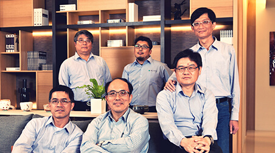
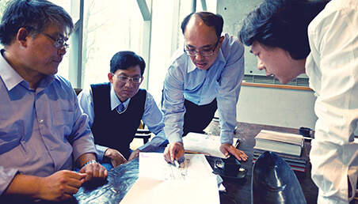
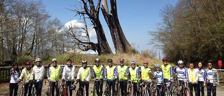

IDEA經營理念
尋找屬於自己的 清水混凝土
當砂子、砂石與混凝土的混合物‧緩緩流進模板，
無論工頭或工人都要拿著木槌跟竹棒來回奔走，直到混凝土流過密密麻麻的鋼筋，
到達模版的每個角落，這時，他們對自己工作品質的高度要求，
想「灌出漂亮的清水混凝土」的意念，會直接表現在結果上。～Ando Tadao
無論工頭或工人都要拿著木槌跟竹棒來回奔走，直到混凝土流過密密麻麻的鋼筋，
到達模版的每個角落，這時，他們對自己工作品質的高度要求，
想「灌出漂亮的清水混凝土」的意念，會直接表現在結果上。～Ando Tadao
- 
起 點
一腔赤誠初心，因理念而集結的菁英團隊
1999年11月，一群執著於營造工程之工務菁英，面對921大地震後亟欲開展的災後重建，因為期望有所貢獻而集結，毅然成立了啟宇營造。
多年來，啟宇人一本初心，謹記營造是一份責任事業，在責任與利潤對比懸殊的時代裡，啟宇始終堅持以優良的品質、透明化的價格，讓業主建立對品質及價格的信心，最後以高配合度，如質如期完成業主的需求。 - 
立 基
一把規矩的尺，以態度而積累的良好口碑
品質第一、客戶優先、回歸標準施工規範及透明化的施工管理，是啟宇營造的經營理念。
透過長期建立起的SOP、不斷修正與貫徹實踐，並以招攬人才、培育人才為方法，建立起現有的專業團隊，十多年來，我們抱持使命必達的堅持，與建築師、結構技師等專業人員發展出最佳的溝通模式，為業主尋找最佳的營造解決方案。
我們深信，以穩健踏實腳步貫徹的經營理念，必能完成最好的作品，贏得業主最佳的讚賞。 - 
動 能
一份堅毅的心，為夢想而鍛鍊的團隊精神
自行車運動，是啟宇人最熱衷參與的團隊活動，從一開始的運動健走，轉進專攻單車自由行，全體同仁逐步凝聚出共同的興趣、話題與努力的目標；從宜蘭、淡水、武嶺到阿里山，在一次次挑戰與征服的過程中，啟宇營造更因此學會愛自然、敬自然、惜自然的心情！
當團隊有了共同的目標與強固的向心力，便有了共戰、共贏的組織動能，這是啟宇人最引為傲的團隊精神，我們也將這份力量投注於工作之中，讓業主享受到啟宇團隊一體同心的服務、與專業的能量！
願 景
一股向上力量，跨足建設發光發熱的品牌
深耕營造本業多年，隨著專業組織的建立與發展，2009年啟宇團隊跨足建設，成立創健建設，
開始實現建築夢！
邁入建築業，是一項全新的旅程，我們期望，立基於啟宇營造多年來積累的經驗，
我們將重新歸零學習，讓所有的夢想可以深耕實現，與臺灣的建築同業共同努力，
為城市景觀與居住文化，貢獻創新、向上的力量！
 loading
loading